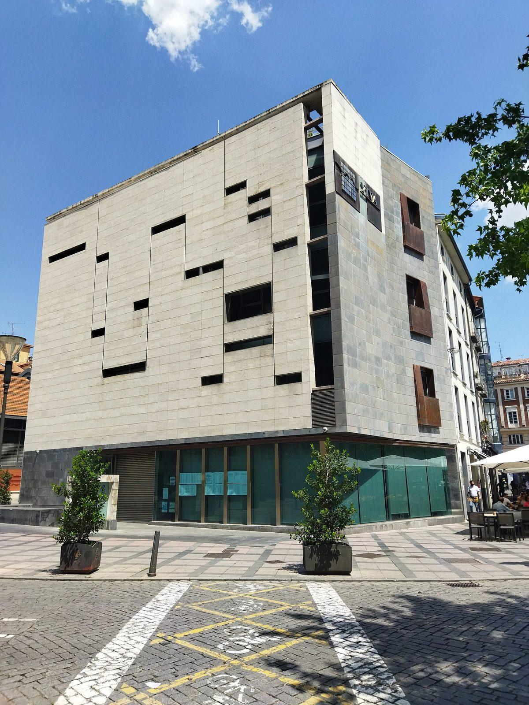

스페인 바야돌리드 야당 "시영 임대주택 지붕 태양광 2년째 공유 자가소비 안 돼…71가구 혜택 못 받아"

3개 동 합계 50kW, 2024년부터 계통 연결…VTLP 주장, 시 행정 절차 마무리 요구, 지연 이유에 대한 시 설명은 보도에 없어
스페인 바야돌리드 시의회 야당 '바야돌리드 토마 라 팔라브라(VTLP)'는 시영 임대주택 3개 동 지붕의 태양광이 2024년부터 계통에 연결돼 있는데도 시가 '공유 자가소비' 절차를 마치지 않아 입주 71가구가 그 전기를 쓰지 못하고 있다고 주장했다. VTLP 자료에 따르면 시 주택공사 VIVA가 관리하는 이 세 건물의 설비는 합계 50kW, 예상 발전량은 연 8만5,000kWh가 넘으며, 공공 투자는 약 15만 유로, 카스티야이레온 주정부 보조금은 10만 유로가 넘는다. 사업은 VTLP가 시정에 참여한 전 임기에 유럽연합 경제회복기금 재원의 보조금에 신청해 추진됐고, 2023년 9월 시 집행위원회가 처음부터 공유 자가소비 방식으로 설비 계약을 승인했다. VTLP의 크리스티나 콜리노(Cristina Colino) 시의원은 국민당(PP)·복스(Vox) 연정 시 집행부가 손을 놓은 탓이라며 "이 가구들의 전기요금을 줄이려고 단 패널"이라고 말하고 남은 행정 절차를 마치라고 요구했다. VTLP는 지연이 보조금 조건 위반과 반환으로 이어질 수 있다고 경고했지만 실제 행정 요구나 절차가 진행 중인지는 밝히지 않았고, 지연 이유와 일정에 대한 시의 설명은 보도에 실리지 않았다. VTLP는 닷새 전에도 시 지붕 에너지공동체가 체육관 4곳에 머물러 있다고 비판한 바 있다.
시민에너지 관점
50kW, 연 8만5,000kWh의 설비가 다 지어지고도 71가구의 요금 고지서가 그대로라는 주장이 사실이라면, 공공 태양광의 성과는 설치 용량이 아니라 그 전기가 누구에게 어떻게 나뉘는지로 따져야 한다는 점을 보여 준다. 공유 자가소비 같은 배분 절차는 서류 일로 여겨지기 쉽지만, 보조금 조건이 그 방식에 걸려 있다면 행정이 멈추는 순간 입주민 혜택과 공공 재정이 함께 흔들릴 수 있다. 에너지 비용 부담이 큰 공공임대주택 입주민이 입주자 조직이나 주민 협동조합으로 배분 계약과 운영에 직접 참여하면, 시정을 누가 맡든 사업이 멈추지 않게 지켜보는 주인이 생긴다. 국내 공공임대주택과 공공부지 태양광도 공사에 앞서 전기와 수익을 입주민에게 나누는 방식과 시행 기한을 계약서에 못 박아야 한다.
출처: Tribuna de Valladolid 2026-10-29 Rebeca Pasalodos Pérez 원문 보기
スペイン・バジャドリードの野党「市営賃貸住宅の屋根の太陽光、2年たっても共同自家消費が始まらず…71世帯が恩恵を受けられず」
3棟合計50kW、2024年から系統に接続…VTLPの主張、市に行政手続きの完了を要求、遅れの理由について市の説明は報道になし
スペイン・バジャドリード市議会の野党「バジャドリード・トマ・ラ・パラブラ（VTLP）」は、市営賃貸住宅3棟の屋根に設置された太陽光発電が2024年から系統に接続されているにもかかわらず、市が「共同自家消費」の手続きを終えていないため、入居する71世帯がその電気を使えずにいると主張した。VTLPの資料によると、市の住宅公社VIVAが管理するこの3棟の設備は合計50kW、予想発電量は年8万5,000kWhを超え、公共投資は約15万ユーロ、カスティーリャ・イ・レオン州政府の補助金は10万ユーロを超える。事業はVTLPが市政に参加していた前の任期に、欧州連合の復興基金を財源とする補助金に申請して進められ、2023年9月に市の執行委員会が当初から共同自家消費方式で設備契約を承認した。VTLPのクリスティナ・コリノ（Cristina Colino）市議は、国民党（PP）とボックス（Vox）の連立による市執行部が手をこまねいているためだとして「この世帯の電気料金を下げるために付けたパネルだ」と述べ、残る行政手続きを終えるよう求めた。VTLPは遅れが補助金の条件違反や返還につながりかねないと警告したが、実際に行政上の要求や手続きが進んでいるかは明らかにしておらず、遅れの理由や日程についての市の説明は報道に載っていない。VTLPは5日前にも、市の屋根を使うエネルギーコミュニティが体育館4カ所にとどまっていると批判していた。
市民エネルギーの視点
50kW、年8万5,000kWhの設備が完成していながら71世帯の電気料金が変わらないという主張が事実なら、公共太陽光の成果は設置容量ではなく、その電気が誰にどう分けられるかで測るべきだということを示している。共同自家消費のような配分手続きは書類仕事と見られがちだが、補助金の条件がその方式に結びついているなら、行政が止まった瞬間に入居者の恩恵と公共財政がともに揺らぎかねない。エネルギー費の負担が重い公営賃貸住宅の入居者が、入居者組織や住民協同組合として配分の契約と運営に直接加われば、誰が市政を担っても事業が止まらないよう見守る持ち主が生まれる。韓国の公共賃貸住宅や公有地の太陽光も、工事の前に電気と収益を入居者に分ける方法と実施期限を契約書に明記すべきだ。
出典: トリブナ・デ・バジャドリード 2026-10-29 レベカ・パサロドス・ペレス 原文を読む
西班牙巴利亚多利德反对党：“市营租赁住房屋顶光伏两年仍未实现共享自用…71户享受不到”
3栋楼合计50kW，2024年起并网…VTLP的主张，要求市政府完成行政手续，报道中没有市方对延误原因的说明
西班牙巴利亚多利德市议会反对党“巴利亚多利德发声（VTLP）”称，市营租赁住房3栋楼屋顶上的光伏设备自2024年起已经并网，但由于市政府尚未完成“共享自用”手续，71户住户仍无法使用这些电力。根据VTLP提供的资料，由市住房公司VIVA管理的这3栋楼的设备合计50kW，预计年发电量超过8万5,000kWh，公共投资约15万欧元，卡斯蒂利亚-莱昂自治区政府的补贴超过10万欧元。该项目是在VTLP参与市政的上一届任期内，以欧盟经济复苏基金为资金来源的补贴申请推进的，2023年9月市执行委员会批准了设备合同，从一开始就采用共享自用方式。VTLP市议员克里斯蒂娜·科利诺（Cristina Colino）认为这是人民党（PP）和呼声党（Vox）联合执政的市执行部门不作为所致，她说“这些板子是为了降低这些家庭的电费才装的”，并要求完成剩余的行政手续。VTLP警告延误可能导致违反补贴条件并须退还补贴，但没有说明是否确有行政要求或相关程序正在进行，报道中也没有市政府关于延误原因和时间表的说明。VTLP五天前也曾批评，市政府提供给能源社区使用的屋顶仍只有4座体育馆。
市民能源视角
如果50kW、年发电8万5,000kWh的设备已经建成，71户的电费单却没有变化的说法属实，那就说明公共光伏的成效不应以装机容量衡量，而应看这些电力分给了谁、怎么分。共享自用这类分配程序容易被看作文书工作，但如果补贴条件与这种方式挂钩，行政一停下，住户的受益和公共财政就可能一起动摇。能源支出负担较重的公营租赁住房住户，如果以住户组织或居民合作社的形式直接参与分配合同和运营，无论谁主持市政，都会有守护项目不中断的主人。韩国的公共租赁住房和公共用地光伏，也应在施工之前就把向住户分配电力和收益的方式以及实施期限写进合同。
来源: 巴利亚多利德论坛报（Tribuna de Valladolid） 2026-10-29 丽贝卡·帕萨洛多斯·佩雷斯（Rebeca Pasalodos Pérez） 查看原文
Valladolid opposition says rooftop solar on municipal rental housing still not shared with tenants after two years, leaving 71 households without the benefit
Three buildings totalling 50kW have been grid-connected since 2024; VTLP claims the city has not finished the paperwork, and the report carries no explanation from the city
Valladolid Toma la Palabra (VTLP), an opposition group on Valladolid city council in Spain, claims that solar panels on the roofs of three municipal rental housing blocks have been connected to the grid since 2024, yet 71 resident households still cannot use the power because the city has not completed the procedures for shared self-consumption. According to VTLP figures, the installations on the three buildings, managed by the municipal housing company VIVA, total 50kW with expected output of more than 85,000kWh a year, backed by public investment of about 150,000 euros and a subsidy of more than 100,000 euros from the regional government of Castile and León. The project was launched under the previous council term, when VTLP was in government, with an application for subsidies funded by the EU recovery fund, and in September 2023 the city's governing board approved the installation contract on a shared self-consumption basis from the outset. VTLP councillor Cristina Colino blamed inaction by the city's governing coalition of the People's Party (PP) and Vox, saying the panels were put up "so these families would pay less for electricity," and called for the remaining administrative steps to be completed. VTLP warned that the delay could breach the subsidy conditions and lead to repayment, but did not say whether any administrative demand or procedure is actually under way, and the report carries no explanation from the city of the reasons for the delay or a timetable. Five days earlier VTLP had also criticised the city for keeping its rooftop energy community scheme limited to four sports halls.
Citizen Energy View
If it is true that a finished 50kW system producing more than 85,000kWh a year has left 71 households' electricity bills unchanged, then the success of public solar should be judged not by installed capacity but by who gets the power and how it is shared. Allocation procedures such as shared self-consumption are easily dismissed as paperwork, but when subsidy conditions are tied to them, a stalled administration can put both tenants' benefits and public money at risk. When public housing tenants, who carry some of the heaviest energy cost burdens, take part directly in allocation contracts and operation through tenant associations or resident cooperatives, the project gains owners who will keep it running whoever runs city hall. Public rental housing and public-land solar in Korea should likewise fix in the contract, before construction, how electricity and income will be shared with residents and by when.
Source: Tribuna de Valladolid 2026-10-29 Rebeca Pasalodos Pérez Read the original